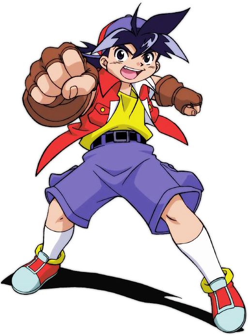
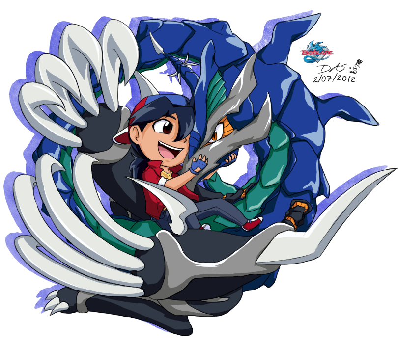

Kişisel
Diğer adı ile Tyson Granger; Arka arkaya üç dünya şampiyonluğu kazanan, birincisini Bladebreakers ile, ikincisini Max Tate ile ve üçüncüsü BBA Revolution ile kazanan, Dünyanın 1 numaralı Beyblader'idir. Tyson, başarısız olduğunda bile "Bir Numara" olmaya çalışan kendini beğenmiş, kendine güvenen ve korkusuz bir Blader olarak tanıtıldı. Seri boyunca, Tyson olgunlaştı ve acemi olmaktan profesyonel bir Beybladeci olmaya kadar sorumluluğunu ciddiye aldı. Tyson, fikrini söylemekten korkmayan güçlü iradeli bir Blader'dır ve bunu yaparken, kendi yaşındaki çoğu çocuktan daha fazla belaya giriyor gibi görünüyor, ancak bu sorunları çok kolay hallediyor. Tyson, ciddi bir şekilde beyblade yapan genç bir adam olana kadar her geçen sezon azalan mizah anlayışıyla ünlüdür. Tyson, dizi içinde gerçekten popüler bir kişidir. Amatör olmasına rağmen çok fazla hayranı vardı. Bölgesel turnuvayı ilk kazandığında, birçok kişi onun gibi olmak ve onu yenmek için Beyblading'i aldı. Beyblade: V-Force'da gösterildiği gibi okulunda pek çok hayranı var, Hilary'yi dehşete düşürecek şekilde. Popüler olmasına rağmen, beyblading arkadaşlarının dışında pek yakın arkadaşı yok gibi görünüyor. Tyson, Beyblade dışında, rekabetçi doğası nedeniyle kolay arkadaş edinmez, ancak genellikle yaptıkları üzerinde derin bir etki bırakır, tutumlarını ve yaşam biçimlerini tamamen değiştirir. Tyson'ın en büyük notu, güçlü sportmenliğidir, genellikle zaferde rakiplerini devam etmeye teşvik etmeye çalışırken görülür, buna Kai, Tala, Zeo Zagart ve hatta Brooklyn dahildir. Birinci Sınıf Blader'dır, Bladebreakers'ın lideridir. G-Revolutions üyesi ve lideridir.
Beybladeler
Takım arkadaşları gibi, Tyson'ın Bey/Bit-Beast'i de Çin mitolojisindeki Dört Aziz Canavar'dan birine dayanmaktadır; Dragoon, Doğu'nun Azure Ejderhası Qing Long'dan sonra modellenmiştir ve Japonca adı "Seiryu"dur. "Dragoon" adı, Tyson'ın Spin Dragoon olarak olgunluğa ulaşana kadar (oyuncu isterse) yükseltme seçeneğine sahip olduğu ana bitten geliyor. Bunu, Dranzer adını Ultimate Frostic Dranzer oyunundaki ana parçasından alan Kai ile paylaşıyor.
"Dranzer" gibi "Dragoon" kelime oyunudur, "Dranzer" "Dragon" ve "Panzer" oyunudur, "Dragoon" ise "Dragon" ve "Dragoon"un birleşimidir. Dranzer'den farklı olarak, türü değişmedi ve tüm varyasyonlar ejderhadır.
Solak olmasına rağmen, animede bununla ilgili hatalar yapılıyor, Tyson ekibinin tek solak üyesi ve tüm seride solak olan birkaç Blader'dan biri.
Ayrıca, solak olmasına rağmen, Tyson genellikle sağ eliyle fırlatır. Bu genellikle başlatıcıyı tutarken daha fazla kontrol sağlamak için yapılır.
F-Dynasty'nin Beyblade'leri ve HMS Beyblade'leri sola dönebilse de, Tyson'ın Beyblade serisi yalnızca sol dönüş dişlisini kullanan teklerdir (ilk Beyblade, Grip Attacker hariç). Tyson'ın da solak olması gibi, bu, sol elini kullanan bir kılıç ustasının sağ elini kullanan bir kılıç ustasına karşı sahip olduğu üstünlüğe bir selamdır.
Her sezonda Tyson, en yeni Beyblades serisiyle başlarken, Bladebreakers'ın geri kalanı, ilk beyblading görünümünde Driger V'i kullanan Ray in V-Force dışında önceki modellerini kullanıyor. V-Force'da Tyson ve Ray, Dragoon V ve Driger V ile seriye başlar (Driger F, ancak bir kez kısa bir süre görüldü), Kai ve Max ise serinin ilerleyen zamanlarına kadar V serisi Beyblade'leri almazlar. G-Revolution'da Tyson, Dragoon G ile başlar, Kai, Ray ve Max ise V2 Beyblade'lerini Dünya Şampiyonaları başlayana kadar kullanırlar
(yine Ray, Asya eleme turnuvasında Driger G'yi ilk kez kullandığı için hariç tutulabilir,
Kai ve Max, sırasıyla Rusya ve Amerika elemeleri için V2 bıçaklarını kullanır). Daichi ayrıca seride daha sonra Strata Dragoon G'yi de alıyor.
Dış görünüş
Ejderha, esasen Avrupa ve Çin ejderhalarının bir kombinasyonudur, bacakları korkutucu bir şekilde ayağa kalkabilecek kadar uzun ve uzundur ve ayağa kalkarken her zaman kemerli olan uzun bir boyundur. Dragoon'un ayrıca, hem ellerinde hem de dirseklerinde pençelerle biten iki kolu ve sırtında ve kuyruğunda birkaç sivri uç olması, bize Dragoon'un saldırı halkalarının neden her zaman sivri uçlu olduğu konusunda bir fikir verir. Orijinal seride Dragoon'un tasarımı zaman zaman değişti. İlk sezonda, Dragoon diğer bit-canavarlarla birlikte ruhlara benzeyecek şekilde tasarlandı ve monokrom renkler verildi. Bu Ejderhanın rengi hayaletimsi bir elektrik beyazıydı. İkinci sezonda Dragoon, Beyblade'den çıkarken kendi resmi gibi görünecek şekilde güncellendi. G Devrimi'nde, yalnızca özel saldırılar sırasında Dragoon'a bakışlar vardı, bazen rüzgar saldırısı hareketlerinde Ejderha şeklinin gösterilmesiyle serpiştirildi.
Dragon ayrıca bazen konuşabilir, ancak esas olarak onu her zaman duyabilen tek Tyson'dır. Ayrıca, diğer bit-canavarlar gibi, Dragoon'un pozu her Beyblade yükseltmesinde her zaman değişir.
Saldırılar ve Güç
Rüzgar ruhu olduğu için Dragoon'un hareketleri esas olarak rüzgara dayalıdır. Bu hareketler arasında en yaygın ve en güçlüsü, çevredeki havadan yaratılan dev kasırgalardır (ancak ilk serinin iki noktasında kasırgalar, yüksek hızlarda dönen Beyblade tarafından yaratılır). Tyson bu gücü rakibin Beyblade'lerini stadyumdan dışarı atmak için kullandı.
İlk Sistem
Spin Dragoon (Yeni Nesil Beigoma Savaşı: Beyblade ve manga)
Ejderha Kavrama Saldırganı
Spin Dişlisi
Ejderha Fırtınası - Fırtına Saldırısı
Ejderha Fantom - Hayalet Kasırga
Magnacore Sistemi
Ejderha Zaferi - Zafer Kasırgası
Dragoon V2 - Hiper Zafer Kasırgası
Motor Dişlisi
Dragoon Galaksisi - Galaksi Fırtınası, İkiz Tornado Saldırısı (Yalnızca Daichi ile).
Dragoon Galaxy Turbo - Galaxy Turbo Twister, Dragoon Tank (Sadece Daichi ile)
Sert Metal Sistem
Ejderha Metal Fırtınası - Evrim Fırtınası
Dragoon Metal Fantom - Fantom Evolution Hurricane
Burst Sistemi
Dragon Storm Wing Xtreme
Dragon Fighter Yerçekimi Değişkeni
Ejderha Zaferi Sting Evrimi
Dragon V2 Tekerlek Xceed'
Yetenekler 
Tyson'ın hem mangada hem de animede kısaca bahsedildiği gibi (Japonca versiyonu, İngilizce dublajda kesilmiştir) Beyblading'i seçmesinin nedeni annesinin kaybıydı. Onun yokluğunda büyürken, Beyblade'e dönmeye başladı. Savaşta kararlı ve güçlü bir ruha sahip olan Tyson, aceleci davranabilir ve çok fazla risk alabilir. Tyson, Beyblade kişiselleştirmede pek iyi değil ve bazen sağduyudan yoksun. Tyson'ın Beyblade'leri, bir ejderha şeklini alan özel saldırılar kullanır ve genellikle etraftaki en şiddetli, daha güçlü Beyblade'lerden biridir. Rüzgar elementini kullanırlar. Dragoon'un Beyblade'lerinin, Tyson'ın büyüdükçe ve hatalarından öğrendikçe nasıl geliştiğini anlatan her modelde daha iyi hale geldiği biliniyor.
Tyson'ın Bit-Beast'i Dragoon. Tyson ve Bit-Beast Dragoon'u, diğer hiçbir Blader'ın bu duyguyu paylaşmadığı gibi, seri boyunca efsanevi bir bağı paylaşıyor, takım arkadaşları bile bunu kendi bit-canavarlarıyla yapamaz. Bit-Beast'i, gücü ve sonsuz güven kaynağı sayesinde, kendisini hayal edilemez seviyelere itme yeteneğiyle birleştiğinde genellikle daha fazla güç kazanır. Bir aşamada Dragoon'un yanı sıra Kai'nin Dranzer'ini kullandı. Rus turnuvası sırasında yaptıklarından dolayı Kai'ye duyduğu öfkeyle Dranzer'i başarılı bir şekilde beslemeyi başardı. Dranzer'in eski efendisinin onu terk etmesine olan kendi öfkesiyle birleşince, ikisi daha güçlü Kara Dranzer bit-canavarına karşı savaşlarını Max'in yeni Draciel Beyblade'inin yardımıyla başarıyla kazandılar, burada Driger ve Dragoon'un birleşik kuvvetleri onlardan birkaç dakika önce başarısız olmuştu. Tyson, bu nedenle, yalnızca Ejderha Beyblade'iyle değil, diğer Beyblade'leri oldukça ustaca kullanabilir ve hatta diğer Bit-canavarları çağırabilir. Tyson, köpekleri ve arabaları geride bırakabilmek gibi garip becerilerini Dragoon Beyblade'inden alıyor gibi görünüyor.
G-Revolution'ın son bölümünde, onunla Dragoon arasındaki paylaşılan güç, ona Brooklyn ile olan savaşı boyunca uçma yeteneği verdi. Bu aynı zamanda Brooklyn'in alternatif boyutunun bir etkisi olabilirdi. Beyblade serisinde yer alan birkaç solak Blader'dan biridir. GBA oyunlarında, Tyson, stat büyümesi nedeniyle istemeden en zayıf bıçak oyuncularından biri olabilir. Saldırıda büyük bir büyüme elde eder ve diğer alanlarda zayıflığa neden olur. Seviyeler ilerledikçe ve o güçlendikçe, Saldırısı, diğer kılıç ustalarının çoğundan önce maksimuma itilir. Bu ona büyük bir hasar avantajı sağlar. Ancak bu, maksimumda bir kez daha yükseğe çıkaramadığı için azalmaya başlar ve diğer istatistikleri genellikle çok zayıf olduğundan, oyunlardaki diğer Blader'lar daha dengeli durum dağılımı ile daha yüksek seviyelerine ulaştıkça hızla azalır. Bununla birlikte, oyunun başlarında, yüksek saldırısı nedeniyle birçok bıçakçıya hükmedebilir, bu da bu oyunlarda hızlı bir şekilde ilerlemesine izin verdi, ancak zayıf savunma nedeniyle, yenilirse savaşların hızlı bitmesi anlamına gelir.
Başka
Akademik olarak o kadar iyi olmasa da Kendo kılıcının kullanımıyla eğitilmiştir. Ailesinin eğitim aldığı bir dojosu var. Aslında, solak olmak, Solak kılıç ustalarının sağ elini kullanan meslektaşlarına göre üstünlüğüne bir selamdır. Tyson'ın ailesi Kendo kılıçlarında uzmanlaşmıştır ve geleneksel olarak kılıç ustasının soyundan gelmektedir. Bu yüzden bit-canavarı veya "Dövüşme ruhu" aile kılıcındaydı.
İlişkiler
Hiro Granger
Tyson'ın ağabeyi, Beyblade'de sunacak çok bilgisi olan bilge bir beybladeci: G-Devrimi. Onun da bir karşılığı var; Gale'nin Jin'i. Hiro önce Tyson'a beyblade oynamayı öğretti. Mangada Hiro başlangıçta BEGA Ligi'ne Brooklyn'in koçu olarak katıldı, ancak daha sonra Boris'e organizasyonunun Tyson ve arkadaşlarının becerilerini geliştirmeleri için bir yol olduğunu kanıtladıktan sonra BBA'nın yeniden kurulmasına yardım etti. Bit-Beast'in adı Metal Driger.
Tatsuya Granger
Tyson'ın babası, Bit-Beast'lerin nasıl çalıştığını, nereden geldiklerini ve neden kendilerinin beyblade içinde olduklarını bulmaya kendini adamış bir arkeologdur ve cevaplarını bulmak için tüm dünyayı dolaşmaktadır. Yoshie Kinomiya Tyson'ın annesi, Tyson henüz dört aylıkken bilinmeyen bir hastalık nedeniyle öldüğü için kendisi hakkında çok az şey biliyor.
Ryu Granger
Tyson'ın büyükbabası, bir samuray dojo eğitmeni, Tyson'ı her iki ebeveynin yokluğunda ilk yıllarında yetiştirdi.
Makoto Granger
Mangada Tyson'ın oğlu. O bölümde görünür ve Kai'nin oğlu Gou ve Ray'in kızı Lin ile savaşırken görülür.
Kai Hiwatari
Tyson, uzun süredir rakibi ve arkadaşı olan Kai ile olan ilişkisi ile tanınır. Serinin başlangıcından itibaren Tyson ve Kai baş düşmanlardı, ancak seri devam ettikçe arkadaş oldular ve her ikisi de kendilerini En İyi Beybladers yapan harika ve güçlü bir bağa sahipti. Hem Tyson hem de Kai birbirlerini yenmek istedikleri kişi olarak görüyorlar. Kai ne zaman kendi sebeplerinden dolayı takımdan ayrılsa, Tyson onun yerine liderliği devralmak için her zaman etraftadır (ancak Tyson her zaman orijinal dublörde takım kaptanıydı).
Geleneksel olarak, Beyblade serisi boyunca Kai, takım arkadaşları olarak bile Tyson'ın ana rakibi olarak kurulmuştur. Bu, Pokémon rakipleri Red ve Blue'ya dayanan ortak tasarımlarına borçludur. Kai'nin Tyson'a vurduğu biliniyor ve ikisinin çok zıt davranışları var.
Ray Kon
Ray, Tyson'ın bazen kavga ettiği ama karşılıklı saygıya sahip olduğu görülen biri. Ray, Tyson'ı Kai'nin yanında olmadığında çok dürtüsel hale geldiğinde hizada tutmaya meyillidir ve onu en büyük rakibi olarak görür.
Kenny
Dizi boyunca en yakın arkadaşı okula birlikte gittiği Kenny olmuştur. Kenny, diğerleri takımdan ayrıldığında Tyson'ın yanında yer alır ve hatta Dünya Şampiyonaları için bıçaklı ortak olurlar.
Max Tate
Max ve Tyson iyi arkadaşlardır ve genellikle, Max Tyson'ın bir köpeği kasabanın nehrinin kenarından düşmekten kurtarmasına yardım ettiğinde veya Tyson, Draciel'i Psykick binası ile almak için Max ile isteyerek gittiğinde olduğu gibi, diğeri tehlikedeyken birbirlerine yardım ederler. çökmek üzere. Tyson, Japon takımından ayrıldığı için Max'i Ray'den daha kolay affeder. G-Revolution'daki Dünya Şampiyonalarından sonra Max, şehre döndükten sonra hemen Tyson'ın grubuna yeniden katılır.
Hilary Tachibana
Hilary, Tyson'ın alışkanlıklarından rahatsız olmasına rağmen, Tyson'a aşık gibi görünen sınıf arkadaşıdır. Kai, Ray ve Max, birbirleriyle savaşabilmeleri için Dünya Şampiyonalarında diğer takımlarına katıldıktan sonra Hilary ve Kenny, Tyson'ın yanında kalır.
Daichi Sumeragi
Tyson ve Daichi, Dünya Şampiyonaları için hızla takım arkadaşı ve antrenman ortağı olan yakın arkadaşlardır. Benzer kişilikleri vardır, ancak bu onların birbirleriyle çatışmasına neden olur. Daichi, fırsatını bulduğunda Tyson'ı sık sık tekeline almaya çalışır, ancak sonunda sefil bir şekilde başarısız olur.
Robert Jurgens
Robert Jurgens, Tyson'ın en büyük rakiplerinden biridir. İlk tanıştıklarında Robert amatör oyuncuları bıçaklarını yok ederek yenmişti. Tyson, Robert ile savaştı ve kaybetti. O ve Robert, Robert'ın aile malikanesinde tekrar karşılaştılar.
Tala
İlk tanıştıklarında, Tala başlangıçta hızlı bir şekilde tanınmış yetenekli bir Beyblade olan Tyson'a karşı küçümseyiciydi. Tyson, Dünya Şampiyonası finallerinde Tala'yı yendiğinde, sonunda birbirlerine saygı duymaya başladılar. G-Revolution'da, ikisi hala iyi ilişkiler içindeydiler ve Boris'in yeni BEGA örgütünü devirebilecekleri zaman bile birbirlerine destek oldular.
Ozuma
Tyson, Ozuma ile ilk olarak Sony'nin Süpermarket Beyblade Turnuvasında tanıştı. Ozuma, Tyson'ı birkaç kez yendi.
Kane Yamashita
Tyson ve Kane çok ortak noktaları olduğunu (ör.: ruhları, beyblading teknikleri vb.) fark ederler ve bir beysavaş sırasında arkadaş olurlar. Ancak beraberliğin ardından Kane, Tyson'a Psykick tarafından işe alındıklarını söyler ve bu Tyson üzerinde kötü bir izlenim bırakır. Psykick Takımı yenildiğinde, Tyson ve Kane tekrar arkadaş olurlar.
Zeo Zagart
Tyson, Zeo ile ilk tanıştığında, onu Saint Shields ile dörtte bir savaştan kurtardı. Zeo, Tyson'ı putlaştırıyor ve onunla antrenman yapma ve/veya savaşma şansını elde ettiği için mutluydu. Zeo, babasından kendisi hakkındaki gerçeği öğrendiğinde ve Tyson'ın ekibinin onu olması gerektiği kişiye dönüştürmek için gereken bit-canavarlara sahip olduğunu öğrendiğinde arkadaşlıkları gerilir. Tyson, bir zamanlar tanıdığı ve arkadaş olduğu çocuğu bulmaya çalışmak için Zeo ile yüzleşir, ancak başarısız olur. Zeo, Kai'yi yenip Dranzer'i ondan çaldığında, Tyson, Zeo acımasız olduktan sonra Beyblading'i gözden kaybetmeye başlamıştı, ancak herkes onu hizada tutmayı başarıyor. Ancak Tyson, Dünya Şampiyonası finallerinde Zeo'yu yendikten sonra tekrar arkadaş oldular ve Zeo kendini gerçekte olduğu gibi kabul etti.
Daichi Sumeragi
Tyson ve Daichi, Dünya Şampiyonaları için hızla takım arkadaşı ve antrenman ortağı olan yakın arkadaşlardır. Benzer kişilikleri vardır, ancak bu onların birbirleriyle çatışmasına neden olur. Daichi, fırsatını bulduğunda Tyson'ı sık sık tekeline almaya çalışır, ancak sonunda sefil bir şekilde başarısız olur.